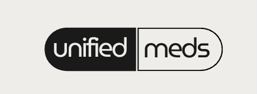
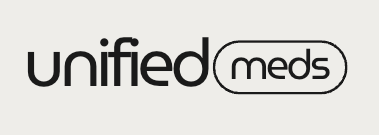
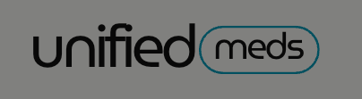

The logo story.
The brand behind the capsule seal: the idea, the brief, the directions Avi drew, and the seal that was chosen. How to use the logo (lockups, colours, clear space, sizes, files) is on the Logo page.
One capsule, two halves.
Current The brand idea, decided by Avi (U-31). The full brand story is on Who we are.
The name and the mark say the same thing.
“unified” sits bold in the filled half of a capsule; “meds” sits in the open half. The parts of a man's care come together in one place, and treatment is only one half of it.
The brief.
Summarised from the logo project notes (New Logo · handover).
Through shape, structure or a hidden meaning. Not a literal cross, stethoscope or caduceus.
A person, a capsule, a face, a pill.
People, care, a smile.
Readable at 16px and in one colour. The sizes are set in R-118 and R-93.
Avi's directions.
Round 8: the capsule wordmark Avi drew himself, from which the logo was born, and the capsule as a container for words (02a, 02b). Number 01 became the capsule seal. The other round 8 directions are archived, outside the published hub.



On a phone the three directions stack, one per row, at full width.
The choice.
Two final directions were presented. Direction B, the capsule seal, was chosen (R-90). Direction A (um icon) stays in the logo file for reference. The animated stings, B plus C1 and C2, which build the seal from the letters u and m, are on the Videos page (R-101).